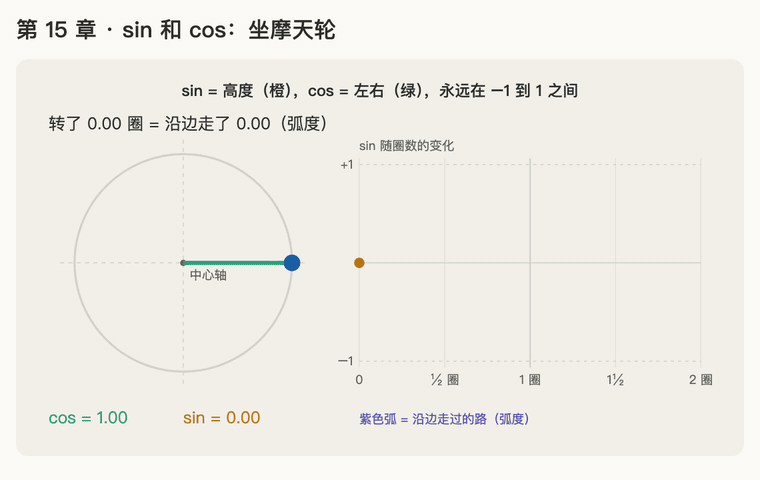

第 15 章 · sin 和 cos：圆上转圈
本章回答：sin、cos 是什么？为什么它们适合拿来做位置的"号码牌"？
讲解日期：2026-11-05 · 上一章：第 14 章 位置编码（上） · 下一章：第 16 章 位置编码（下）：多档时钟
前置：本章是数学前置，不对应论文原文；第 16 章再回到 AIAYN §3.5。
本章缩写：\(d_{model}\)：d = dimension（维度），每个词向量有几个数（论文 512）；pos = position（位置，座位号）；PE = Positional Encoding（位置编码）；sin = sine（正弦）；cos = cosine（余弦）；RoPE = Rotary Position Embedding（旋转位置编码）；AIAYN = Attention Is All You Need（本课主论文）；CS336 = Stanford 课程 CS 336（Computer Science 336，Language Modeling from Scratch）；代码里的名字（PyTorch、nn.Linear等）见附录"PyTorch 对照"。全部缩写见 附录 · 缩写与术语表
讲解
第一步：坐摩天轮，高度永远在 −1 到 1 之间（2026-11-05）
接上一章：号码牌的数不能无限变大，不然会盖住词本身。我们想要一种号码牌，座位号一直往上加，牌上的数却始终待在一个小范围里。
类比：摩天轮。 摩天轮的半径是 1。你从正右边（和中心轴一样高的位置）上车，然后逆时针往上转。
只看一件事：你比中心轴高多少（在中心轴下面就是负数）。
1/4 圈：最高 +1
●
╱ ╲
1/2 圈：0 ● · ● 0 圈（上车）：0
╲ ╱
●
3/4 圈：最低 −1
| 转了多少圈 | 在哪 | 比中心轴高多少 |
|---|---|---|
| 0 | 正右边（上车点） | 0 |
| 1/4 | 最顶上 | +1 |
| 1/2 | 正左边 | 0 |
| 3/4 | 最底下 | −1 |
| 1 | 又回到正右边 | 0 |
关键：不管转多少圈，你最高只到 +1，最低只到 −1，永远不会跑出这个范围。这正是上一章的号码牌缺的性质。
这个"比中心轴高多少"，数学里就叫 sin（正弦）。公式和角度的写法下一步再讲，这一步只记住：sin 就是摩天轮上的高度，永远在 −1 到 1 之间。
第二步：转一圈就重复一次（2026-11-05）
题 1 的答案说明了一件事：转 1¼ 圈和转 1/4 圈，人坐在同一个位置，高度都是 +1。
摩天轮每转一整圈，就回到原来的地方，高度也跟着从头再来一遍。
| 转了多少圈 | 0 | 1/4 | 1/2 | 3/4 | 1 | 1¼ | 1½ | 1¾ | 2 |
|---|---|---|---|---|---|---|---|---|---|
| 高度 sin | 0 | +1 | 0 | −1 | 0 | +1 | 0 | −1 | 0 |
后半段和前半段一模一样。这种"隔一段就重复"的性质叫周期 period；摩天轮的周期就是 1 圈。
这对号码牌意味着什么：
- 好处：数永远在 −1 到 1 之间，不会盖住词（解决了第 14 章的毛病）；
- 新问题：如果让"座位号 = 转了几圈"，那么转 1/4 圈和转 1¼ 圈的两个座位会拿到一模一样的号码牌，又分不清了。
这个新问题先记着，第 16 章用"多档时钟"解决。下一步先看另一个更小的问题：就算在一圈之内，只看高度也会弄混。
第三步：再加一个数 cos：左右偏多少（2026-11-05）
题 2 的结论：正右边和正左边高度都是 0，只看高度分不清，缺了一个维度的信息。
补上缺的那个维度： 除了"比中心轴高多少"，再记一个"比中心轴偏右多少"（偏左就是负数）。这个数叫 cos（余弦）。
最顶上
cos 0, sin +1
●
╱ ╲
正左边 ● · ● 正右边（上车点）
cos −1, sin 0 ╲ ╱ cos +1, sin 0
●
最底下
| 转了多少圈 | 在哪 | cos（偏右多少） | sin（高多少） |
|---|---|---|---|
| 0 | 正右边 | +1 | 0 |
| 1/4 | 最顶上 | 0 | +1 |
| 1/2 | 正左边 | −1 | 0 |
| 3/4 | 最底下 | ？ | ？ |
现在正右边是 (cos, sin) = (+1, 0)，正左边是 (−1, 0)，分得清了。
一句话：sin 是高度，cos 是左右；两个数放在一起 (cos, sin)，就能说清你在圆上的哪一点。cos 的值也一样永远在 −1 到 1 之间，也是转一圈重复一次。
第四步：拿 (cos, sin) 当号码牌（2026-11-05）
回到第 14 章的号码牌。新做法：座位号每加 1，摩天轮就多转 1/4 圈；号码牌就是那一刻的 (cos, sin)。
| 座位 | 转了多少圈 | 号码牌 (cos, sin) |
|---|---|---|
| 1 号 | 1/4 | (0, 1) |
| 2 号 | 1/2 | (−1, 0) |
| 3 号 | 3/4 | (0, −1) |
| 4 号 | 1 | (1, 0) |
和第 14 章的老号码牌比一比，还是"狗" = [2, 0]：
| 老号码牌 [0, 座位号] | 新号码牌 (cos, sin) | |
|---|---|---|
| 狗坐 3 号座 | [2, 0] + [0, 3] = [2, 3] | [2, 0] + [0, −1] = [2, −1] |
| 狗坐 1000 号座 | [2, 0] + [0, 1000] = [2, 1000]，词被盖住 | 1000 × 1/4 = 250 圈，正好回到上车点 → [2, 0] + [1, 0] = [3, 0] |
新号码牌的每个数都在 −1 到 1 之间，座位号再大，也盖不住词。
类比回顾：老号码牌像一把一直往前延伸的尺子，数越写越大；新号码牌像钟表指针，只在表盘上转圈，指针尖永远在表盘里。
第五步：换个单位：弧度 radian（2026-11-05）
为什么要换单位：到现在我们一直用"转了几圈"。但论文的公式写的是 \(\sin(pos/10000^{2i/d_{model}})\)，括号里直接是一个数。数学里 sin、cos 括号里的数，默认用的单位是弧度 radian，不是"圈"。
类比：沿着摩天轮的边走了多远。 摩天轮半径是 1，绕一整圈的边长（周长）= 2π ≈ 6.28。所以：
弧度 = 你沿着摩天轮的边走了多长的路。转 1 整圈 = 走了 6.28 = 2π 弧度。
| 转了多少圈 | 角度 | 弧度（沿边走了多远） | sin |
|---|---|---|---|
| 1/4 | 90° | π/2 ≈ 1.57 | 1 |
| 1/2 | 180° | π ≈ 3.14 | ？ |
| 3/4 | 270° | 3π/2 ≈ 4.71 | −1 |
| 1 | 360° | 2π ≈ 6.28 | 0 |
写法：\(\sin(\pi/2) = 1\) 的意思就是"沿边走 1.57（转 1/4 圈）时，高度是 1"。
例子：\(\sin(1)\) 就是沿边走了 1 的路，大约是 1 ÷ 6.28 ≈ 0.16 圈（约 57°），还没到最顶上，高度约 0.84。
所以论文里 \(\sin(pos)\) 这种写法，意思是"座位号是几，就沿边走几的路"：1 号座走 1，2 号座走 2……每个座位大约多转 0.16 圈。
动画演示：坐摩天轮看 sin 和 cos

可交互版：animations/15-sin-cos.html（用浏览器打开，可播放、单步，还能拖滑块转到任意圈数）。
怎么看：
- 前半段：蓝点转两圈。橙色竖线是 sin（高度），绿色横线是 cos（左右），紫色弧是沿边走过的路（弧度）；读数始终在 −1 到 1 之间；
- 右边的 sin 曲线：第二圈把第一圈原样再画一遍，这就是周期；
- 后半段：(cos, sin) 当号码牌，每个座位多转 1/4 圈。从 5 号座开始，和前面的座位撞牌（变红）。
练习与作答记录
题 1：转了 1/4 圈时高度是 +1。转了 1¼ 圈（一整圈再加 1/4 圈）时，高度是多少？
作答（2026-11-05）："1"。✓
点评：对。1¼ 圈 = 转完一整圈回到上车点，再转 1/4 圈到最顶上，所以和 1/4 圈一样是 +1。这就是第二步要讲的"转一圈就重复"。已加入卡片 R29。
题 2：转 0 圈（正右边）和转 1/2 圈（正左边）时，高度各是多少？如果只告诉你高度，你分得清自己在正右边还是正左边吗？
作答（2026-11-05）："0，0，分不清，缺一个维度信息"。✓
点评：完全对，而且自己说出了"缺一个维度"，这正是第三步要补的东西：再加一个数 cos，记录左右位置。已加入卡片 R30。
题 3：转 3/4 圈（最底下）时，cos 和 sin 各是多少？
作答（2026-11-05）："0，−1，的确这样就清楚了"。✓
点评：对。最底下不偏左也不偏右，cos = 0；在中心轴下面 1，sin = −1。四个点 (1, 0)、(0, 1)、(−1, 0)、(0, −1) 各不相同，一圈之内每个位置都分得清。
题 4：用第四步的新号码牌（座位号每加 1 多转 1/4 圈），5 号座转了几圈？它的号码牌是多少？和哪个座位的牌一样？
作答（2026-11-05）："1.25 圈，和 1 号一样"。✓
点评：对。5 × 1/4 = 1¼ 圈，转完一圈后再转 1/4 圈，号码牌是 (0, 1)，和 1 号座撞牌。这就是第二步说的"转一圈就重复"：只用一个摩天轮，每隔 4 个座位牌就重复一次。第 16 章用"多档时钟"（好几个转速不同的摩天轮）解决。已加入卡片 R31。
题 5：\(\sin(\pi)\) 是多少？（提示：π ≈ 3.14 弧度是转了几圈？）
作答（2026-11-05）："半圈"。✓（答了提示，最后一步没说出来）
点评：对，π 弧度就是半圈（一整圈是 2π）。半圈在正左边，高度是 0（题 2 答过），所以 \(\sin(\pi) = 0\)。已加入卡片 R32。
口诀
sin 管高低，cos 管左右；
转圈不出正负一，一圈一重复；
一圈等于 2π，括号里是走了多远。
本章复习卡片
- R29（sin 是摩天轮上的高度：范围 −1 到 1，转一圈重复）
- R30（只看 sin 分不清左右，要加 cos；(cos, sin) 合起来定位圆上一点）
- R31（(cos, sin) 当号码牌：不会盖住词，但只用一个摩天轮会撞牌）
- R32（弧度：沿边走了多远；1 圈 = 2π）
附录 · 延伸阅读
留给以后深入学习用，不影响本章主线。★ 是建议先读的。
- 本地论文的文本版在materials/text/papers/，表里的行号就是指这个文本版。
- CS336 handout 在cs336-spring2025/materials/text/cs336_spring2025_assignment1_basics.txt。
推荐阅读
| 读什么 | 读哪里 | 读它为了什么 |
|---|---|---|
| ★ Khan Academy · Trigonometry | Unit circle（单位圆）一节 | 和本章摩天轮同一套讲法：半径为 1 的圆、sin 是纵坐标、cos 是横坐标 |
| ★ BetterExplained, An Intuitive Guide to Angles, Degrees and Radians | 全文 | 为什么用弧度：弧度 = 沿圆走过的路程，和第五步一样 |
| Attention Is All You Need | §3.5，L287–L297；特别是 L291 | 先看一眼正弦公式："wavelengths form a geometric progression from 2π to 10000 · 2π"，第 16 章逐字讲 |
| Formal Algorithms for Transformers | Algorithm 2 Positional embedding（L248、L278） | 位置向量的伪代码，第 16 章会对照 |
| Kazemnejad, Transformer Architecture: The Positional Encoding（博客） | 全文 | 读完第 16 章再看：把多档时钟画成图 |
数学原理
- 单位圆定义：半径为 1 的圆上，从正右边逆时针走过 θ 弧度到达的点，坐标就是 (cos θ, sin θ)。本章的摩天轮就是单位圆。
- 范围：\(-1 \le \sin\theta \le 1\)，\(-1 \le \cos\theta \le 1\)。这是它们能做号码牌的原因：不会盖住词（第 14 章的毛病）。
- 周期：\(\sin(\theta + 2\pi) = \sin\theta\)，cos 同理。转一圈就重复，所以只用一个摩天轮会撞牌（第 16 章）。
- 勾股定理：点在半径为 1 的圆上，所以 \(\cos^2\theta + \sin^2\theta = 1\)。
- 弧度：圆周长 = 2π × 半径，半径为 1 时一整圈的路长是 2π。所以 360° = 2π 弧度，1 弧度 ≈ 57°。
- 预告：和角公式：\(\sin(a+b)=\sin a\cos b+\cos a\sin b\)，\(\cos(a+b)=\cos a\cos b-\sin a\sin b\)。论文 L293 说"\(PE_{pos+k}\) 可以写成 \(PE_{pos}\) 的线性函数"，靠的就是它；RoPE（阶段 B）也建立在它上面。
公式清单
| 公式 | 意思 |
|---|---|
| 点的坐标 = (cos θ, sin θ) | cos 管左右，sin 管高低 |
| \(-1 \le \sin\theta, \cos\theta \le 1\) | 永远不出这个范围 |
| \(\sin(\theta+2\pi)=\sin\theta\) | 周期 2π：转一圈重复 |
| \(\cos^2\theta+\sin^2\theta=1\) | 点永远在半径为 1 的圆上 |
| 1 圈 = 360° = 2π 弧度 | 单位换算 |
| \(\sin 0=0,\ \sin(\pi/2)=1,\ \sin\pi=0,\ \sin(3\pi/2)=-1\) | 四个特殊点（cos 依次是 1, 0, −1, 0） |
| \(\sin(a+b)=\sin a\cos b+\cos a\sin b\) | 和角公式，第 16 章和 RoPE 用 |
PyTorch 对照：把本章的数字用代码算一遍
代码在仓库本地
transformer-deep-dive/solutions/chapter-code/ch15_sin_cos.py，配套测试tests/test_ch14_17.py（在线版不带代码文件，下面摘了关键几行）。Mac 上直接能跑，不需要 GPU：
bash cd transformer-deep-dive/solutions/chapter-code uv run python ch15_sin_cos.py
讲义 ↔ 代码：
| 讲义 | 公式 / 说法 | PyTorch 写法 | 跑出来 |
|---|---|---|---|
| 圈 → 弧度 | 1 圈 = 2π | turns * 2 * math.pi |
¼ 圈 = 1.57 |
| sin 是高度 | 0、¼、½、¾、1 圈 | torch.sin(rad) |
[0, 1, 0, −1, 0, …] |
| cos 是左右 | 同上 | torch.cos(rad) |
[1, 0, −1, 0, 1, …] |
| 转一圈就重复 | sin(1¼ 圈) = sin(¼ 圈) | math.isclose |
True |
| (cos, sin) 号码牌 | 每座多转 ¼ 圈 | seat_tag(seat) |
3 号 (0, −1)；1000 号 (1, 0) |
关键几行：
angle = seat * 0.25 * 2 * math.pi # 座位号 → 转了几圈 → 弧度
torch.stack([torch.cos(angle), torch.sin(angle)]) # 号码牌 (cos, sin)
代码里才看得到的：
torch.sin、torch.cos只认弧度：写torch.sin(90)得到的不是 1，而是 sin(90 弧度) ≈ 0.89。要从"圈"或"度"换成弧度再算，这正是第五步讲的。- 打印出 −0.0：cos(¾ 圈) 算出来是 −0.00000000000000018 这种极小的数（float 存不下精确的 π），四舍五入后带着负号。代码里
+ 0.0把它变回 0.0，不影响任何结果。
自己改一改：
- 把每座多转的 ¼ 圈改成 1/3 圈，第几号座会和 1 号座撞牌？